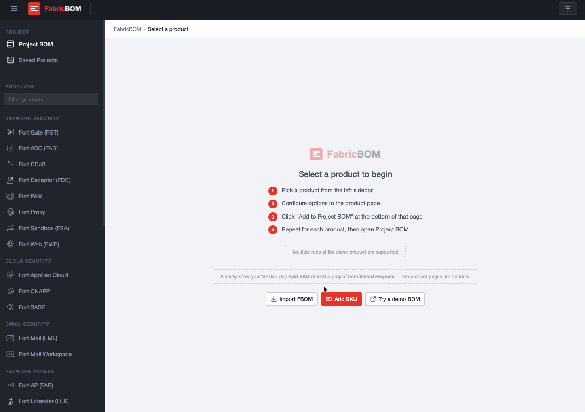
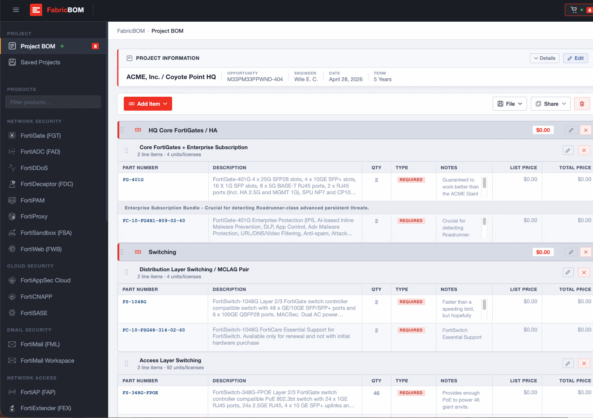
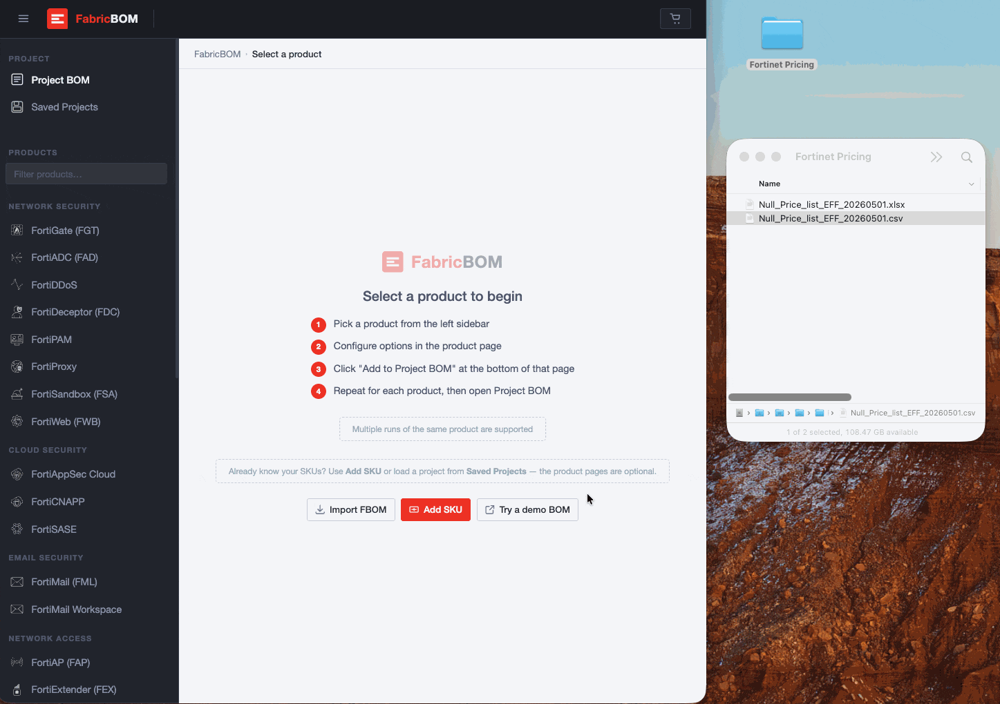

Adding a Product to a Project BOM
How do I add a new SKU or part number to my Project BOM?
There are a few ways to add a new SKU (Stock Keeping Unit) or part number to your Project BOM:
- The "Add Item" Button: Under the Project Information section, there is a red Add Item dropdown menu. Clicking this will give you options to append a new product line or group directly to your current build.
- Product Categories: In the left-hand sidebar, products are categorized by solution (e.g., Network Security, Cloud Security, Network Access). Clicking on a specific product family like FortiGate (FGT) or FortiSwitch (FSW) will allow you to browse and select specific SKUs to add to your BOM.
- Search & Custom Entry: If you know the exact part number (like
FG-401GorFC-10-348GF), you can use the Filter products… search bar at the top left, or scroll down to the CATALOG SEARCH section and click Search & Custom Entry to manually look up and add the SKU.

Editing Items on a Project BOM
How do I edit an existing item on a Project BOM?
This is only applicable if the BOM is not in Read-Only mode. You can make changes directly within the table for that specific product block:
- Change Quantity: Click directly into the number box in the QTY column to adjust the unit count.
- Change Item Type: Click the dropdown in the TYPE column (showing options like REQUIRED, OPTIONAL, or EXCLUDED) to change how the item is factored into your project.
- Update Notes: Click the text field in the NOTES column to add, modify, or delete custom details.
- Edit the Item Header: To rename the title of a product block, click the small pencil icon located at the top-right corner of that block.
- Remove an Item: To delete a block entirely, click the ✕ button next to the pencil icon.

Adding and Working with Group Headers
How do I add a header to my Project BOM?
To add a custom section header, navigate to your active Project BOM. Just below the Project Information section at the top of your workspace, click the red Add Item dropdown menu (or Add SKU) and select the option to Add Header.
Why should I use headers in my build?
Headers are an excellent way to keep your Bill of Materials clean and organized, especially for larger or more complex projects. You can use them to logically group products by:
- Physical location — e.g., "HQ Data Center," "Branch Offices"
- Solution category — e.g., "Core Networking," "Endpoint Security"
- Deployment phase — e.g., "Phase 1," "Phase 2"
How do I customize the text of a new header?
Once a header block is added to your project workspace, click directly on the default text or use the Edit (pencil) icon on that block to rename it to whatever fits your organizational needs.
Can I reorganize my BOM using these headers?
Absolutely. FabricBOM is designed to be flexible. You can drag and drop your configured product blocks to move them beneath your newly created headers, allowing you to structure your final export exactly how you want to present it.
How do I delete a header I no longer need?
Just like any other item on your BOM, look for the ✕ (remove) button located on the right side of the header block. Clicking this will remove the header from your project layout.
Editing Project Information
How do I edit the Project Information on a Project BOM?
- Locate the Project Information Section: Look at the white box at the top of your main working area, just above the "Add Item" button. This section displays details like your project name, Engineer, Date, and Term.
- Click the Edit Button: In the top-right corner of that white box, click the Edit button (which features a small pencil icon).
Clicking this will allow you to modify those top-level project details.
Saving a Project BOM
How do I save my current Project BOM?
- Locate the File Menu: On the right side of the screen, just above your first list of items (and right next to the Share button), you will see a button labeled File.
- Save the Project: Click the File dropdown menu and select Save or Save As… to store your current build.
Once your project is saved, you can easily retrieve it later by clicking on Saved Projects in the top-left sidebar menu.
Opening Previously Saved Projects
How do I open a previously saved Project BOM?
- Locate the Left Sidebar: Look at the dark grey menu panel on the far left.
- Click on "Saved Projects": Under the top PROJECT heading, click on Saved Projects.
Clicking this will take you to a screen where you can view, select, and load any of your previously saved builds.
Restoring a Previous Version
How do I restore a previous version of a Project BOM?
FabricBOM retains a history of your previous saves, allowing you to easily recover an older version if an accidental overwrite occurs.
- Navigate to the Saved Projects menu in the left-hand sidebar.
- Locate the project you need to restore in the main viewing area.
- Beneath the project details, click the toggle labeled ▼ [X] prior save(s) to expand the version history for that specific build.
- Locate the desired previous save by reviewing the date and time stamps.
- Click the Load button to the right of the target timestamp.
Pricing
Can I view and upload pricing information in FabricBOM?
Yes. FabricBOM allows you to seamlessly upload and view your pricing data so it can be applied to your project builds.
Where do I go to upload my pricing file?
Navigate to the Saved Projects menu located in the left-hand sidebar. Scroll down just below your list of saved projects, and you will find the SAVED PRICING section.
How do I upload the pricing file?
Inside the SAVED PRICING section, there is a designated upload area (a dashed box with a "+" icon). You can either drag and drop your file directly into this box, or click anywhere inside the box to browse your computer and select your file.
What file formats are supported for pricing uploads?
The tool currently accepts standard Fortinet price lists in either CSV or XLSX format.
What happens after I upload the file?
FabricBOM will automatically read the file to determine the name and effective date of the price list. Once successfully uploaded, the system will begin applying those specific prices to the items in your Project BOMs.

Read-Only (RO) Mode
How do I mark my Project BOM as Read-Only?
In the white Project Information box at the top of your workspace, locate the small checkbox labeled RO (next to the Save button). Click the checkbox to toggle Read-Only mode on.
What does marking a BOM as Read-Only actually do?
Activating Read-Only mode locks the current BOM, preventing accidental edits, quantity changes, or overwrites.
Will I be prompted to enter a password when making a BOM Read-Only?
Yes. When you check the RO box, a prompt will appear asking if you would like to require a password to unlock the BOM. You can choose to generate a password or proceed without one by clicking No, read-only only.
What is the difference between using a password and not using one?
Without a password: The BOM is locked from editing, but all fields and information remain fully visible to anyone viewing it.
With a password: The BOM is locked, and specific sensitive fields—namely the Customer / Opportunity, Opportunity ID, and Project Scope / Notes—are hidden from anyone who does not have the password to unlock it. These items are encrypted on all exports from a locked BOM and will require a password to decrypt.
Exporting & Importing
How do I export my current Project BOM?
You can export your current build directly from your workspace. Look at the menu panel on the far right side of your screen. Under the FILE heading, click the Export FabricBOM button. This will download a copy of your project file to your computer.
How do I import a previously exported Project BOM?
To load an external BOM file into the tool, navigate to the menu panel on the far right side of your screen. Under the FILE heading, click the Import FabricBOM button. This will prompt you to browse your computer and select the FabricBOM file you wish to upload and open.
Printing
How do I print my Project BOM?
Because FabricBOM is a web-based tool, you can print your BOM using a couple of straightforward methods:
- Directly from your web browser: The application is built to be printer-friendly. Simply press Ctrl + P (Windows/Linux) or Cmd + P (Mac), or navigate to your browser's settings menu and select "Print."
- Export to a spreadsheet first (Recommended for formatting): If you want more control over page breaks, column widths, or custom formatting, export your build first using the File menu, then open and print the file using Microsoft Excel or your preferred spreadsheet application.
Data Storage & Privacy
Where is my project data and pricing information stored? Is it secure?
Yes, your data is completely secure. FabricBOM is designed with a strict privacy-first approach. All of your information—including your saved Project BOMs, uploaded price lists, and project details—is stored entirely locally on your own computer.
Does FabricBOM send my data to a cloud server?
No. Instead of transmitting your sensitive project details or proprietary pricing to an external database or cloud server, FabricBOM utilizes your web browser's built-in, secure storage system (technically known as IndexedDB).
What does local storage mean for my data privacy?
Because everything is saved directly to your local browser profile, your data never leaves your machine. This ensures that you maintain complete control over your information, and no third parties—or even the tool's creators—can access or view your builds.